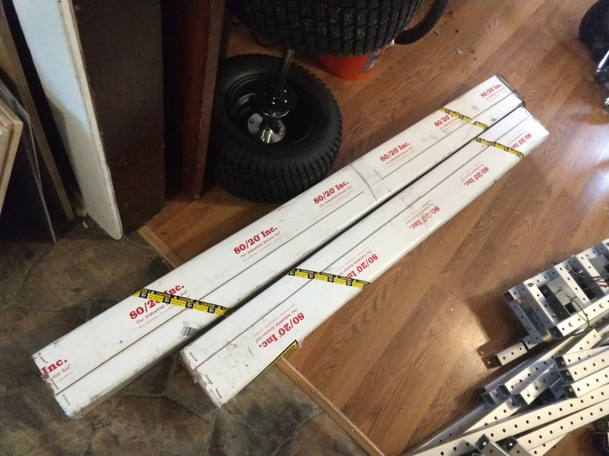
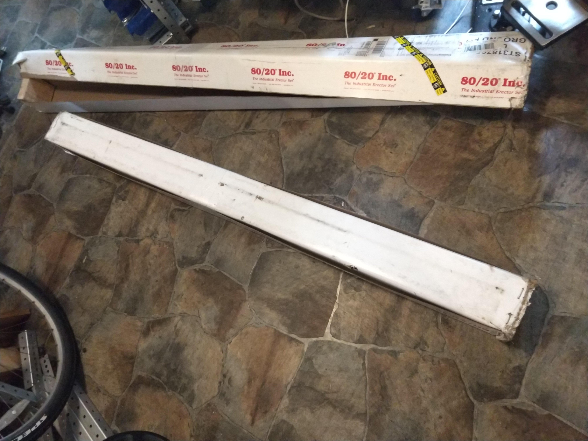
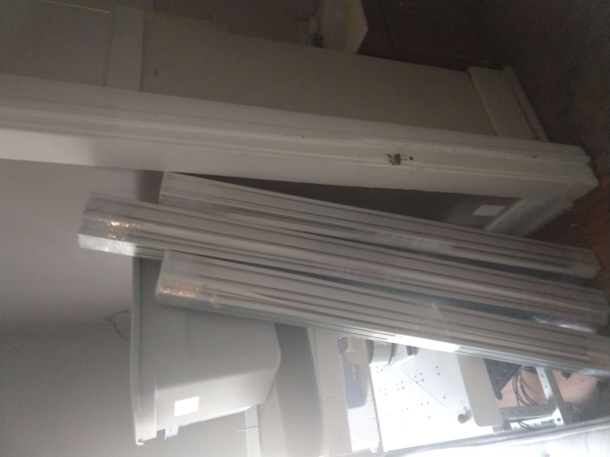
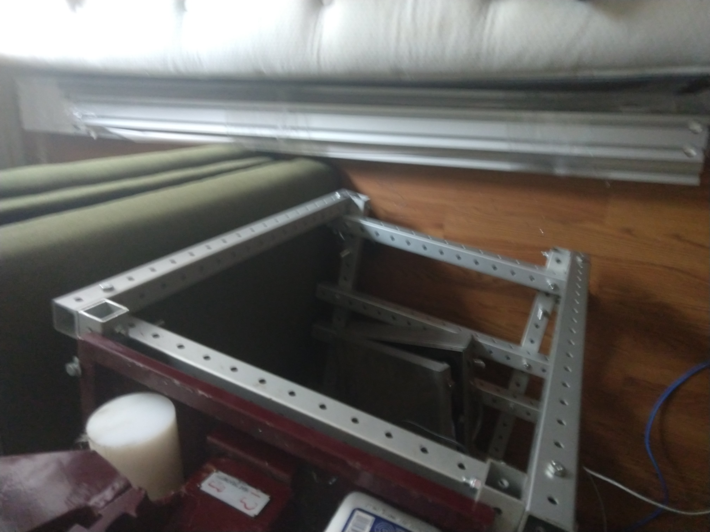
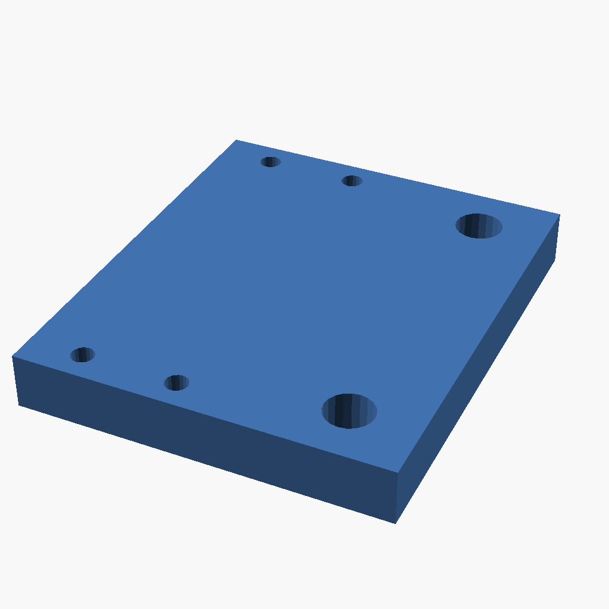

avid cnc 60120 pro

On Tue Apr 14, we purchased a chcrouterparts.com 5x10 Pro CNC router kit. This page documents the changes I've made to that machine, and the processes used to work with it.
Workflow
Operation
- Turn main power knob on control box
- Turn motor enable knob on control box
- Turn spindle power knob on spindle control box
- Power on control laptop
- Start Mach4
- Home X/Y/Z axes using button in upper left corner
- Click "OK" when presented with a window confirming completion of the homing procedure
- Load GCode file for machining by clicking "File op" button
- Begin machining by clicking the "Cycle start" button
- Home X/Y/Z axes using button in upper left corner
- Power down machine by turning main power, motor enable, and spindle power knobs back to the off position.
<youtube>htEH2ablRWU</youtube>
Toolpathing
Current
- Visit jscut.org
- Click "Open SVG" -> "Local"
- Select an SVG file and click "Open"
- Set "Material", "Tabs", "Tool", and "Gcode conversion" to "inch"
- Set Tool diameter to match tool
- Set Tool angle to match tool
- Set Tool pass depth to 0.125
- Set Tool step over to 0.4
- Set Tool rapid to 100 inch / min
- Set Tool plunge to 5 inch / min
- Set Tool cut to 40 inch / min
- Click on SVG outline
- Click "Create operation"
- Click the ">" next to the new operation
- Set operation depth to match material thickness
- Name the operation
- Click "Generate"
- Click "Save Gcode"
References
Assembly Instructions




http://www.cncrouterparts.com/support/pro/60120/Preparation/
Tooling
- CNC pen / sharpie holder for plotter
- inexpensive endmills
- corner rounding endmill
- S30 Turnkey Automatic Toolchanger kit
- Rip Precision Tools: 60 degree v bit
- Tools Today: Foam cutting bits
- The Jenny low profile compression bit
- Amana Tool 46473 taper for detail
Work holding

{| class="wikitable"
|-
! Quantity !! Part !! Link
|-
| 1 || E-Z Lok Threaded Insert, Zinc, Hex-Flanged, 1/4"-20 Internal Threads, 13mm Length (Pack of 100) || [[https://www.amazon.com/gp/product/B002KT43MU/ref=ppx_yo_dt_b_asin_title_o03_s01?ie=UTF8&psc=1&tag=replimat-20|Amazon]]
|-
| 1 || Performix 11604-6 Blue Plasti Dip, 14.5 fl oz || [[https://www.amazon.com/gp/product/B000HE9T6A/ref=ppx_yo_dt_b_asin_title_o03_s00?ie=UTF8&psc=1&tag=replimat-20|Amazon]]
|-
| 2 || Lot 10 Each 1/4 20 Male Thread Star Knobs 2” Diameter with 2" Long Threaded Post || [[https://www.amazon.com/gp/product/B01DVH0K30/ref=ppx_yo_dt_b_asin_title_o00_s00?ie=UTF8&psc=1&tag=replimat-20|Amazon]]
|-
| 1 || POWERTEC 71037-P2 Low Profile Bench Dogs | Woodworking Workbench Peg Stoppers for 3/4 inch Holes | Black – 8 Pack || [[https://www.amazon.com/gp/product/B07Y1W8ZTM/ref=ppx_yo_dt_b_asin_title_o00_s00?ie=UTF8&psc=1&tag=replimat-20|Amazon]]
|-
| 2 || Kreg KBCIC In-Line Clamp (Pack of 2) || [[https://www.amazon.com/gp/product/B0777RVDF4/ref=ppx_yo_dt_b_asin_title_o01_s00?ie=UTF8&psc=1&tag=replimat-20|Amazon]]
|-
| 5 || Craftsman Auto-Adjust Push Peg Clamp 949808 || [[https://www.amazon.com/gp/product/B01M9GLNZ9/ref=ppx_yo_dt_b_asin_title_o02_s00?ie=UTF8&psc=1&tag=replimat-20|Amazon]]
|}
Speeds and feeds
Frame drilling prototype
G91 G28 Z0 X0 Y0 (home axes)
G90 (absolute positioning)
G53 (machine coordinates)
G20 (inch)
G1 Z-3 F50 (safe position)
M3 S20000 (spindle on)
G1 X1.5 Y.75 Z-3 F50 (initial hole)
G91 (relative positioning)
O1000 (name subprogram)
G1 Y0.75 F150 (advance one hole)
G1 Z-6 F100 (plunge - adjust feedrate)
G1 Z-3 F300 (return)
M99 (return subprogram)
O2000 (name subprogram)
G1 X6 F100 (advance to next frame)
M98 P1000 L80 (run subprogram 80x)
M99 (return subprogram)
M98 P2000 L5 (run subprogram 5x)
G1 Z-3 F150 (safe position)
M3 (spindle off)
G91 G28 Z0 X0 Y0 (home axes)
Dust Collection
{| class="wikitable"
|-
! Quantity !! Part !! Link
|-
| 1 || Spindle Dust Shoe Cover || [[https://www.amazon.com/gp/product/B07XFNMLLD/ref=ppx_yo_dt_b_asin_title_o01_s00?ie=UTF8&psc=1&tag=replimat-20|Amazon]] [[http://www.cncrouterparts.com/universal-cnc-dust-shoe-p-396.html|Universal CNC dust shoe]]
|-
| 1 || Dust seperator || [[https://www.jettools.com/us/en/new-products-and-offers/new-products/cyclonic-separator/|Jet tools]]
|-
| 1 || Duct reducer || [[https://www.amazon.com/gp/product/B0822PMH4R/ref=ppx_yo_dt_b_asin_title_o02_s00?ie=UTF8&psc=1&tag=replimat-20|Amazon]] - replace with 3D print
|-
| 1 || Elbow for dust collection and cylclonic seperator || [[https://www.thingiverse.com/thing:2268706|Thingiverse]]
|-
| 1 || 20 feet of 4" diameter PVC hose || [[https://www.amazon.com/gp/product/B01MDUGEXE/ref=ppx_yo_dt_b_asin_title_o02_s00?ie=UTF8&psc=1&tag=replimat-20|Amazon]]
|-
| 1 || 6 inch duct fan || [[https://www.amazon.com/VIVOSUN-Inline-Ventilation-Variable-Controller/dp/B01CTM0JF2?tag=replimat-20|Amazon]]
|-
| 1 || Replacement dust brush || [[https://www.amazon.com/Konmison-Cleaner-Engraving-Machine-Spindle/dp/B01566L3HQ/?tag=replimat-20|Amazon]]
|}
<youtube>-puYg4p-AkM</youtube>
Electronics
Replacement of Ethernet Smoothstepper
The ethernet smoothstepper, while an impressive device, does not appear to be well documented or supported by Free Software. I've decided to replace it with a raspberry pi 3b+ running cnc.js and arduino mega 2560 running grbl. I've created a protoboard PCB to house the pi and arduino and to provide mounting points within the electronics cabinet. Polarized 26 pin headers have been used to interface with the existing smoothstepper compatible connectors. In this way, the electronics cabinet can be restored to original configuration with minimal effort.
- Ethernet Smoothstepper connector pinout
- Warp9: Mach4 Output Signal Descriptions
- CRP850-00E Breakout Board
- grbl-Mega-5x -- update with link to configuration modifications
{| class="wikitable"
|-
! Quantity !! Part !! Link
|-
| 1 || Arduino MEGA 2560 PRO || [[https://www.amazon.com/gp/product/B07Y9P4JL2/ref=ppx_yo_dt_b_asin_title_o00_s00?ie=UTF8&psc=1&tag=replimat-20|Amazon]]
|-
| 1 || LPC1768 mbed development board || [[https://www.ebay.com/itm/mbed-NXP-LPC-1768-ARM-Cortex-M3-Microcontroller/254530741476?ssPageName=STRK%3AMEBIDX%3AIT&_trksid=p2057872.m2749.l2649|ebay]]
|-
| 1 || 15Pcs 2x13 Pins 2.54mm Pitch Straight Connector Pin IDC Box Headers || [[https://www.amazon.com/gp/product/B00OK3T60I/ref=ppx_yo_dt_b_asin_title_o00_s00?ie=UTF8&psc=1&tag=replimat-20|Amazon]]
|}
Initial firmware will focus on cnc.js and the grbl-Mega Atmega 2560 port of grbl. LPC1768 port of grbl is available as a fallback.
Calibration
- 1 inch pinion
- 3.14159 inch / rev
- 3.2:1 reduction
- 3.14159 / 3.2 = 0.9817 inches
- 200 steps / rev
- 203.718 steps / inch
- 0.004908 inches /step
- 8.020796321 steps / mm
- 0.1246759 mm / step
- https://www.avidcnc.com/pro-rack-and-pinion-drive-nema-34-p-226.html
Surfacing
Leveling casters
G90 (absolute positioning)
G53 (machine coordinates)
G20 (inch)
G1 Z-5 F50 (safe position)
M3 S20000 (spindle on)
G1 Z-6.75 F30 (cut position)
G91 (relative positioning)
M98 P1000 L300 (run subprogram)
O1000 (name subprogram)
G1 X60.8 F150 (cut to end of x axis)
G1 Y0.2 F150 (advance Y axis)
G1 X-60.8 F150 (return cut on x axis)
G1 Y0.2 F150 (advance Y axis)
M99 (return subprogram)
G1 Z5 F150 (safe position)
M3 (spindle off)
G91 G28 Z0 X0 Y0 (home axes)
Tramming
<youtube>jjERRmg6vs0</youtube>
<youtube>BXuILLXSpqs</youtube>
<youtube>2n8KcTBNS4U</youtube>
Laser

{| class="wikitable"
|-
! Quantity !! Part !! Link
|-
| 1 || 5.5W optical (20W wall) 450nm laser module || [[http://nejetool.com/module_20w.html|Nejetool.com: 450nm laser module]]
|-
| 1 || 48v -> 12v power supply || [[https://www.amazon.com/gp/product/B07B6D52TB/ref=ppx_yo_dt_b_asin_title_o00_s00?ie=UTF8&psc=1|Amazon: Pro Chaser DC-DC 120V 108V 96V 84V 72V 60V 48V Volt Voltage to 12V Step Down Voltage Reducer Regulator 180W]]
|}
Interface specification: 4pin PH2.0 (red: 12V, black: GND, yellow: PWM, green: temperature signal)
Wavelength: 450nm
Radiator size: 30*80mm
Material: copper + aluminum
Weight: 202g
Drive position: built-in
Is the power adjustable: PWM can be adjusted, PWM: 50KHz-20KHz / 3.3V-12V
Drive protection: surge protection, overvoltage protection
Input power: approx. 12V2A, about20W (without fan power)
Output optical power: 5.5W
Line length: 300mm
Control line installation method: pluggable
Fan size: 30*10mm
Fan speed: 15000 rpm
Controllable temperature: less than 60 degrees Celsius
Best focus range: 40mm-50mm
References
- Avid chip load calculator (xls spreadsheet).
- Candle Grbl controller
- Mach4 Programming Manual